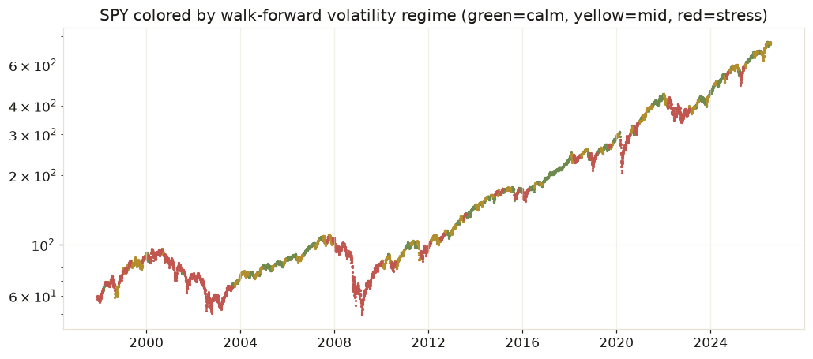
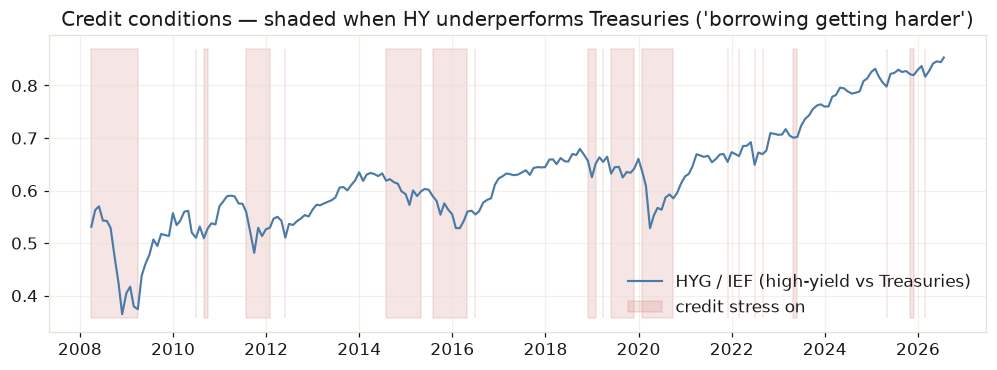
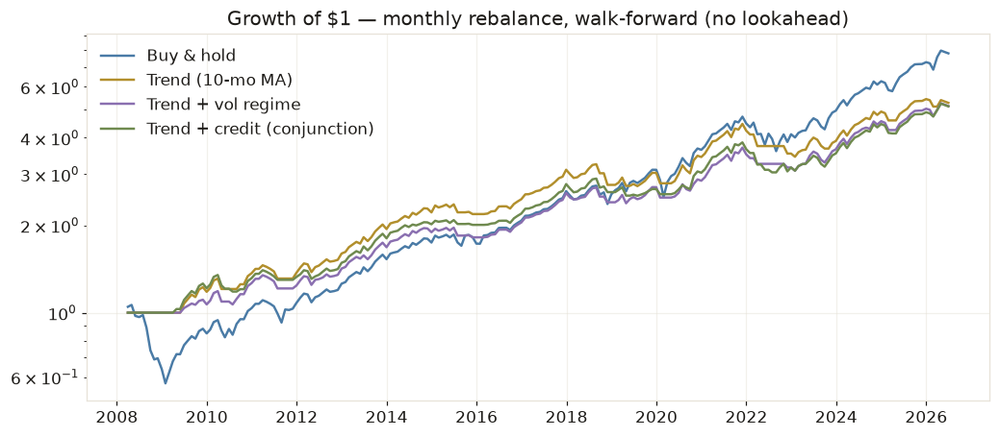
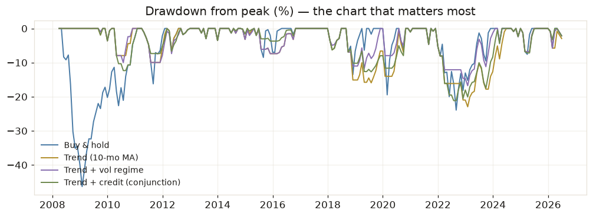

How this system thinks
One rule governs everything here: the model never sees the future. Every signal below is computed "walk-forward" — at each month-end, using only information available on that date, exactly as you would have experienced it. Backtests that skip this rule (most of them) produce beautiful curves and real losses.
1 · Market regimes — the weather system
Markets don't have one personality. They alternate between calm grinds and violent storms, and the storms cluster.

A hidden Markov model assumes an unobservable state (calm / mid / stress) generates the returns we observe, and infers today's state from recent return and volatility behavior. It's the workhorse of regime detection at real funds — not because it predicts crashes, but because it recognizes when one has begun early enough to matter.

Companies live on borrowed money. When lenders get scared they demand higher yields from the riskiest borrowers first — so high-yield bonds sag before the trouble reaches earnings reports. That's why "high valuations + credit tightening" is the classic bubble-burst fingerprint: expensive assets meeting expensive money.
2 · The strategy lab — judging rules honestly
Four rules, same 18-year window (July 2008 → today), monthly rebalance, signals applied to the following month. Cash earns 0% — a deliberate handicap against the timing rules.
| Strategy | CAGR | Sharpe | Worst drawdown | Time invested |
|---|---|---|---|---|
| Buy & hold | 11.93% | 0.80 | -46.3% | 100% |
| Trend (10-mo MA) | 9.54% | 0.90 | -23.0% | 78% |
| Trend + vol regime | 9.39% | 0.97 | -16.8% | 74% |
| Trend + credit (conjunction) | 9.38% | 0.96 | -21.1% | 72% |


CAGR — compound annual growth, "what you actually made per year." Sharpe — return per unit of volatility; how much sleep each percent cost (0.8 decent, 1.0 good for a simple rule). Max drawdown — the worst peak-to-trough fall; the number that decides whether you'd really have stayed in the seat.
The honest result: the filters gave up ~2.4% CAGR and halved the worst loss. That's not a defect — it's the actual product. You are buying insurance with expected return. Whether that trade is worth it depends on account size, temperament, and when you'll need the money — which is why it's a decision to make in calm markets, in advance.
3 · The relationship graph — ideas on trial
Indicators are nodes. Hypotheses about how they combine are edges. Every edge must earn its status from walk-forward evidence — and rejected edges are kept, because remembering what doesn't work is half the edge. Click anything.
| Edge | Status | Evidence — next-month SPY return under condition |
|---|---|---|
| Credit stress → weak returns | tested — weak/insignificant | +0.81% vs +1.04% base · vol 5.9% · n=75 · t=-0.34 |
| Broken trend → weak returns | tested — weak/insignificant | +1.08% vs +1.04% base · vol 7.2% · n=48 · t=+0.04 |
| High-vol regime → weak returns | tested — weak/insignificant | +0.90% vs +1.04% base · vol 6.4% · n=67 · t=-0.18 |
| Credit stress × broken trend | tested — weak/insignificant | +0.80% vs +1.04% base · vol 7.7% · n=34 · t=-0.18 |
| High CAPE × tightening credit | untested — blocked on CAPE data feed | awaiting data feed |
No edge cleared statistical significance (|t| > 2) for predicting average returns — with only 34–75 stress-months in the sample, noisy means can't clear that bar. Yet the strategies built on the same signals clearly cut drawdowns. Both are true because of a cornerstone empirical fact: returns are nearly unpredictable; risk is very predictable. Volatility under stress conditions runs 6–8% a month versus ~5% baseline, and it clusters. The signals don't say "the market will fall" — they say "if it falls, it falls harder." De-risking on them is defense on variance, not a forecast of direction.
4 · Longs, shorts, and staying flat
The point of understanding the market is to act intelligently. Here's how evidence maps to the three possible actions.
Long is the default, not a prediction
Across the sample the market rose in about 64% of months, averaging +1.04%/month — that upward drift is the base rate, the payment for bearing risk. So a long position doesn't need a bullish forecast; it needs the absence of tested warnings. That's why the dashboard shows warning lights, not buy signals.
Flat (de-risking) needs only a variance edge
To justify cutting exposure you don't need to predict a fall — you only need evidence that the distribution got wider, and that's exactly what the regime and credit nodes deliver. This is the cheapest edge in markets because it's the most reliable one.
Shorting needs a direction edge — and we don't have one yet
A short fights the drift: the market's +1%/month base rate is a headwind you pay every month you're early, on top of borrow costs, and your maximum loss is unbounded. Look at the graph's evidence: even our scariest tested condition — credit stress and broken trend together — still averaged +0.8%/month. Historically, being short in those months lost money on average. The bar for an outright short is an edge with a genuinely negative conditional mean and |t| > 2. Nothing in the graph clears it. What professionals do instead of naked shorts: reduce exposure, buy puts (defined risk, known cost), or go long/short pairs where the market drift cancels out. If the CAPE × credit edge validates with a negative mean once the valuation node is wired in, that becomes this playbook's first legitimate short signal — and that test is precisely why it's next on the roadmap.
De-risking needs an edge in variance (easy to find, we have it). Shorting needs an edge in direction (rare, we don't — yet). Confusing the two is how people turn a good storm detector into a losing short book.